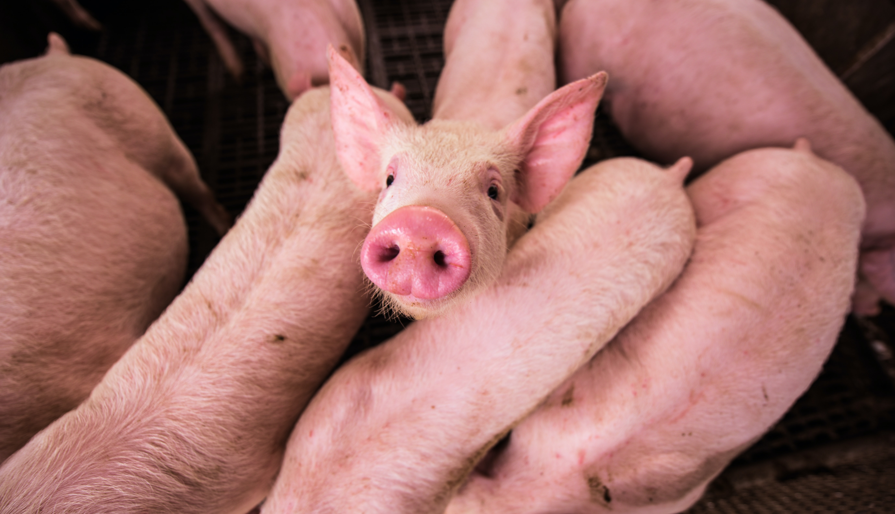

Kilde: Statens Serums Institut
Ny pandemi?
En pandemi voksede ud af dyr og smittede mennesker fordi der var for tæt kontakt. Det samme sker i Danmark i mindre skala, med den intensive dyreproduktion vi ser af bla. grise
"Mellem 2008 og 2016 steg andelen af svinebesætninger, hvor man fandt husdyr-MRSA fra 3-5% til 88%."
Vi har allerede set MRSA smitte fra dyr til mennesker. Sygdomme kan altså muterere fra dyr til mennesker. Det er blot et spørgsmål om tid før vi ser fuldbyrdede mutationer til mennesker i Danmark.